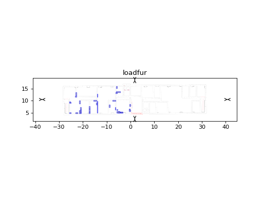
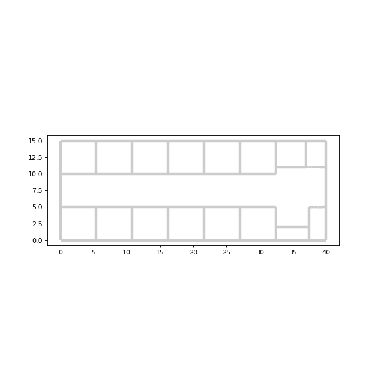

Layout¶
-
class
pylayers.gis.layout.Layout(arg='', **kwargs)[source]¶ Bases:
pylayers.util.project.PyLayersHandling Layout
Gs : Graph of points and segment (structure) Gt : Graph of convex cycles (topology) Gv : Graph of visibility (visibility) Gi : Graph of interactions (interactions) Gr : Graph of rooms (rooms) Nnode : Number of nodes of Gs Nedge : Number of edges of Gs pt : points sequence tahe : tail head
This class uses networkx to store Layout information
Gs : structure Gt : topology Gv : visibility Gi : interaction Gr : room Gm : Gw : ways
Np Ns Nss
ax : (xmin,ymin,xmax,ymax) axn : (0,Dx,0,Dy)
filefur filegeom filematini fileslabini hasboundary segboundary min_sx min_sy max_sx max_sy labels lbltg lboundary listtransition loadosm lsss name normal p2pc pg
pt : points coordinates tahe : segment tail head tgs : graph to segment tsg : segment to graph upnt : array of point index
s2pc : segment to point coordinates s2pu : segment to point index sgsg
sl
typ : ‘indoor’ | ‘outdoor’ coordinates : ‘cart’,’lonlat’ version _filename _hash
- _shseg : keys / segment index
- values / shapely LineString
- dca : keys / Gt node
- values / list of air wall
- degree : keys / point degree
- values / array of index
display : dictionnary for controling various visualization dsseg :
indoor : if True allow indoor penetration isbuilt diffraction
maxheight zceil zfloor zmin
Methods Summary
add_fnod([p])add free node p add_furniture([name, matname, origin, zmin, …])add piece of furniture add_furniture_file(_filefur[, typ])add pieces of furniture from .ini files add_nfpe(np0, s1, s2)Add node on s1 from projection of np0 along s2 add_pnod(p, e1, e2)Project point p on segment e1 along segment e2 add_pons(ns[, alpha])add point on segment add_segment(n1, n2[, num, maxnum, …])add segment between node n1 and node n2 angleonlink([p1, p2])angleonlink(self,p1,p2) return (seglist,angle) between p1 and p2 angleonlink3([p1, p2])return (seglist,angle) between p1 and p2 angleonlinkold([p1, p2])angleonlink(self,p1,p2) returns seglist between p1 and p2 boundary([percx, percy, xlim, force, minD])add a blank boundary around layout build([graph, verbose, difftol, multi])build graphs buildGi([verbose, tqdmpos])build graph of interactions buildGr()build the graph of rooms Gr buildGt([check, difftol, verbose, tqdmpos])build graph of convex cycles Layout.buildGt_oldbuildGv([show, verbose, tqdmpos])build visibility graph buildGw()build Graph of waypaths check([level, epsilon])Check Layout consistency check2()Layout checking check_Gi()cleanup()cleanup the Layout clip(xmin, xmax, ymin, ymax)return the list of edges which cross or belong to the clipping zone closest_edge(p, AAS)not implemented cy2pt([cy, h])returns a point into a given cycle cycleinline(c1, c2)returns the intersection between a given line and all segments del_points(lp)delete points in list lp del_segment(le[, verbose, g2npy])delete segments in le diag(p1, p2, l, al1, al2[, quadsel])return edge list from a diagonal zone dumpr([graphs])read of given graphs dumpw()write a dump of given Graph ed2nd(edlist)convert edgelist to nodelist edit_seg(e1[, data])edit segment Layout.editorLayout.editorTkexportosm()export layout in osm file format extrseg()calculate extremum of segments facet3D(e[, subseg])calculate 3D facet from segment facets3D(edlist[, name, subseg])create facet 3D for geomview filterGi([situ])filter Gi to manage indoor/outdoor situations find_edgelist(edgelist, nodelist)edgelist = find_edgelist(edgelist,nodelist) g2npy([verbose])conversion from graphs to numpy arrays geomfile([centered])create a .off geomview file get_Sg_pos(sigarr)return position of the signatures get_diffslab(npt, lz)get the 2 slabs associated to a diffraction point get_paths(nd_in, nd_fin)returns the possible paths of graph Gs between two nodes. get_points(boxorpol[, tol])get points list and segments list in a polygonal zone get_zone(ax)get point list and segment list in a rectangular zone getangles(poly[, unit, inside])find angles of a polygon have_subseg(e1)check if edge e1 have subseg importosm(**kwargs)import layout from osm file or osmapi importres(_fileres, **kwargs)import res format importshp(**kwargs)import layout from shape file info()gives information about the Layout info_segment(s1)information about segment intercy(ncy[, typ])return the list of interactions seen from a cycle isindoor([pt])test if a point is indoor ispoint(pt[, tol])check if pt is a point of the Layout isseg(ta, he)test if ta<->he is a segment layerongrid(grid, Tx)grid Nx,Ny,2 Tx 1x2 .. layeronlink(p1, p2)layeronlink(self,p1,p2) return seglist between p1 and p2 load()load a layout from a .lay file load_modif(_filename[, build, cartesian, dist_m])load a Layout in different formats loadfur(_filefur)loadfur load a furniture file ls([typ])list the available file in dirstruc mask()returns the polygonal mask of the building merge_segment(n1, n2)merge segment n2 included in n1 nd2seg(ndlist)convert node list to edge list numseg(ta, he[, first])get segment number from 2 points index off_overlay([dx, dy])offset overlay image offset_index([offp, offs])offset points and segment index onseg(pt[, tol])segment number from point (deprecated) outputGi([verbose, tqdmpos])filter output of Gi edges outputGi_mp()filter output of Gi edges outputGi_new([verbose, tqdmpos])filter output of Gi edges plot(**kwargs)plot the layout with shapely polygons plot_segments(lns, **kwargs)” pltlines(lines[, fig, ax, color, alpha])plot a line with a specified color and transparency pltpoly(poly[, fig, ax, color, alpha])plot a polygon with a specified color and transparency pltvnodes(vn[, fig, ax])plot vnodes point_touches_seg(pt[, lseg, segtol, tahetol])determine if a point is touching a segment polysh2geu(poly)transform sh.Polygon into geu.Polygon pt2cy([pt])point to cycle pt2ro([pt])point to room ptGs2cy([n])Gs node to cycle ptin([pt])check if a point is in the Layout randTxRx()returns random coordinates for Tx and Rx. repair(dseg)repair layout room2nodes(room)returns the nodes of a room room2segments(room)returns the segments of a room rotate([angle])rotate the layout save()save Layout structure in a .lay file scl_overlay([ax, ay])scale overlay image seg2pts(aseg)convert segments array from Gs numerotation to corresponding termination points array in pt seg2ro(seg)return room number of a point seg_intersection(**kwargs)determine if a segment intersects any other segment of the layout seginframe(p1, p2)return the seg list of a given zone defined by two points seginframe2(p1, p2)returns the seg list of a given zone defined by two points (vectorised version) seginline(p1, p2)returns the intersection between a given line and all segments segpt([ptlist])return the seg list of a sequence of point number seguv(iseg)returns unitary vector along segments show(**kwargs)show layout show3([bdis, centered])geomview display of the indoor structure showG([graph])show the different graphs showGs(**kwargs)show structure graph Gs showSig(sigarr[, Tx, Rx, fig, ax])Show signature show_layer(name[, edlist, alpha, width, …])show layer show_nodes([ndlist, size, color, dlabels, …])show nodes show_seg1([edlist, alpha, width, size, …])show segment show_segment(**kwargs)show segment signature(iTx, iRx)Determine signature between node iTx and node iRx subseg()establishes the association : name <-> edgelist thwall(offx, offy)Create a list of wall tuples (Transit.world format ) translate(vec)translate layout updateshseg()update shapely segment visi_papb(pa, pb[, edgelist, dtype])visi_papb : determine if pa and pb are in visibility for the structure graph visilist(p)returns the list of nodes which are visible from point p waypointGw(nroom1, nroom2)get the waypoint between room1 and room2 wedge(lpnt)calculate wedge angle of a point wedge2(apnt)calculate wedge angle of a point Methods Documentation
-
add_fnod(p=(0.0, 0.0))[source]¶ add free node p
p : (1x2) tuple
>>> from pylayers.gis.layout import * >>> L = Layout('defstr.lay') >>> L.add_fnod((10.0,10.0)) -13
-
add_furniture(name='R1_C', matname='PARTITION', origin=(0.0, 0.0), zmin=0.0, height=0.0, width=0.0, length=0.0, angle=0.0)[source]¶ add piece of furniture
- name : string
- default = ‘R1_C’
- matname : string
- default = ‘PARTITION’
origin : tuple of floats height : float
default = 0- width : float
- default = 0
- length : float
- default = 0
- angle : float
- default = 0
-
add_furniture_file(_filefur, typ='')[source]¶ add pieces of furniture from .ini files
_filefur : string
-
add_nfpe(np0, s1, s2)[source]¶ Add node on s1 from projection of np0 along s2
np0 : point number s1 : edge number 1 s2 : edge number 2
-
add_pnod(p, e1, e2)[source]¶ Project point p on segment e1 along segment e2
- p : ndarray
- point
- e1 : int
- edge number 1
- e2 : int
- edge number 2
- ..todo
- This function is void
-
add_pons(ns, alpha=0.5)[source]¶ add point on segment
- ns : int
- segment number
- alpha : parameterization of the point
- alpha = 0 (tail) alpha = 1 (head)
delete segment ns create 2 segments with same properties
-
add_segment(n1, n2, num=-1, maxnum=-1, transition=False, name='PARTITION', z=(0.0, 40000000), offset=0, verbose=True)[source]¶ add segment between node n1 and node n2
n1 : integer < 0 n2 : integer < 0 num : segment index (-1 default not given) maxnum : maximum number (-1 default not given) name : string
layer name ‘PARTITION’- z : tuple of 2 floats
- default = (0,40000000)
- offset : float
- [-1,1] default (0)
num : segment number (>0)
A segment dictionnary has the following mandatory attributes
name : slab name associated with segment z : list (zmin,zmax) (meters) norm : array (1x3) segment normal transition : boolean ncycles : list of involved cycles connect : list of point number iso : list of isosegment
If a segment is _AIR it cannnot be duplicated
-
angleonlink(p1=array([0, 0]), p2=array([10, 3]))[source]¶ angleonlink(self,p1,p2) return (seglist,angle) between p1 and p2
p1 : np.array (2 x Np) or (2,) p2 : np.array (2 x Np) or (2,)
data[‘i’] data[‘s’] : list of segment number data[‘a’] : angle (in radians) between segment and LOS axis
>>> from pylayers.gis.layout import * >>> L = Layout('DLR.lay') >>> p1 = np.array([0,0]) >>> p2 = np.array([10,3]) >>> alpha = L.angleonlink(p1,p2)- #array([(0, 141, 1.2793395519256592), (0, 62, 0.29145678877830505),
- (0, 65, 0.29145678877830505)],
dtype=[(‘i’, ‘<i8’), (‘s’, ‘<i8’), (‘a’, ‘<f4’)])
-
angleonlink3(p1=array([0, 0, 1]), p2=array([10, 3, 1]))[source]¶ return (seglist,angle) between p1 and p2
p1 : np.array (3 x N) or (3,) p2 : np.array (3 x N) or (3,)
- data : structured array x N
- ‘i’ : index ‘s’ : slab ‘a’ : angle (in radians)
>>> from pylayers.gis.layout import * >>> L = Layout('DLR2.lay') >>> p1 = np.array([0,0,1]) >>> p2 = np.array([10,3,2]) >>> data = L.angleonlink3(p1,p2)- #array([(0, 141, 1.2793395519256592), (0, 62, 0.29145678877830505),
- (0, 65, 0.29145678877830505)],
dtype=[(‘i’, ‘<i8’), (‘s’, ‘<i8’), (‘a’, ‘<f4’)])
antprop.loss.Losst
-
angleonlinkold(p1=array([0, 0]), p2=array([10, 3]))[source]¶ angleonlink(self,p1,p2) returns seglist between p1 and p2
- p1 : (1 x 2 )
- [0,0]
- p2 : (1 x 2 )
- [10,3]
- seglist : list
- list of segment number on the link
theta
#>>> from pylayers.gis.layout import * #>>> L = Layout(‘DLR.lay’,’matDB.ini’,’slabDB.ini’) #>>> p1 = np.array([0,0]) #>>> p2 = np.array([10,3]) #>>> L.angleonlinkold(p1,p2) #(array([59, 62, 65]), array([ 1.27933953, 0.29145679, 0.29145679]))
-
boundary(percx=0.15, percy=0.15, xlim=(), force=False, minD=10)[source]¶ add a blank boundary around layout
- percx : float
- percentage of Dx for x offset calculation (default 0.15)
- percy : float
- percentage of Dy for y offset calculation (default 0.15)
minD : miimum distance for boundary force : boolean
force modification of boundariesself.lboundary is the list of the nodes of the added boundary self.axn is the zone without the boundary extension self.ax is updated
>>> from pylayers.gis.layout import * >>> L = Layout('defstr.lay') >>> L.boundary()
-
build(graph='tvirw', verbose=False, difftol=0.15, multi=False)[source]¶ build graphs
- graph : string composed of
- ‘t’ : Gt ‘v’ : Gv ‘i’ : Gi ‘r’ : Gr ‘w” : Gw
verbose : boolean difftol : diffraction tolerance multi : boolean
enable multi processingThis function builds all the graph associated with the Layout.
Warning : by default the layout is saved (dumpw) after each build
-
buildGi(verbose=False, tqdmpos=0)[source]¶ build graph of interactions
For each node of graph Gv creates 5 different nodes associated to the same segment
(np,) D (ns,cy0) R -> cy0 (ns,cy1) R -> cy1 (ns,cy0,cy1) T 0->1 (ns,cy1,cy0) T 1->0
Gi is an oriented Graph (DiGraph)
-
buildGr()[source]¶ build the graph of rooms Gr
adjascent rooms are connected
Gr is at startup a deep copy of Gt
The difficulty here is to take into account the AIR transition segments
-
buildGt(check=True, difftol=0.01, verbose=False, tqdmpos=0)[source]¶ build graph of convex cycles
check : boolean difftol : float verbose : boolean tqdmpos : progressbar
todo : - add an option to only take outside polygon
=> pass to self._triangle a hole coreesponding to centroid of polygon except those of boundary ( see buildGtold )
-
buildGv(show=False, verbose=False, tqdmpos=0)[source]¶ build visibility graph
- show : boolean
- default False
verbose : boolean tqdmpos : progressbar
>>> from pylayers.gis.layout import * >>> L = Layout('TA-Office.lay') >>> L.buildGt() >>> Ga = L.buildGr() >>> L.buildGv()This method exploits cycles convexity.
-
buildGw()[source]¶ build Graph of waypaths
buildGr
- for all edges of Gr (adjascent room)
- if room1 and room2 have a common transition
-
check(level=0, epsilon=0.64)[source]¶ Check Layout consistency
level : int
- consistent : Boolean
- True if consistent
dseg : dictionnary of segments
GeomUtil.isBetween
- For all segments
- get the 2 vertices
- for all the other vertices
- check if it belongs to segment
If there are points which are not valid they are displayed
In red point with degree == 1 , In black points with degree == 0
-
cleanup()[source]¶ cleanup the Layout
- Remove nodes which are not connected
- Remove supperimposed segments
-
clip(xmin, xmax, ymin, ymax)[source]¶ return the list of edges which cross or belong to the clipping zone
xmin : float xmax : float ymin : float ymax : float
seglist : list of segment number
- Determine all segments outside the clipping zone
- Union of the 4 conditions
- setdiff1d between the whole array of segments and the segments outside
-
closest_edge(p, AAS)[source]¶ not implemented
This function return the closest segment from p which belong to the AAS (Allowed Angular Sector)
[ns] = closest_edge(self,p,AAS)
-
cy2pt(cy=0, h=1.2)[source]¶ returns a point into a given cycle
- cy : int
- cycle number
- h : float
- point height
- point : nd.array
- 3d point
Layout.pt2cy
-
cycleinline(c1, c2)[source]¶ returns the intersection between a given line and all segments
- c1 : int
- point
- c2 : int
- point
I : numpy.ndarray
pylayers.antprop.signature.Signatures.rays pylayers.gis.layout.Layout.seginframe2
This function is used to detect LOS conditions
-
del_segment(le, verbose=True, g2npy=True)[source]¶ delete segments in le
le : list of segments number
pylayers.gis.layout.Layout.del_node
100% of time is in g2npy
-
diag(p1, p2, l, al1, al2, quadsel=0)[source]¶ return edge list from a diagonal zone
p1 : np.array p2 : np.array tol : al1 : al2 : quadsel : 0 all quadrant
2 1 3 4edgelist
-
dumpr(graphs='stvirw')[source]¶ read of given graphs
- graph : string
- ‘s’ : Gv ‘t’ : Gt ‘r’ : Gr ‘v’ : Gv ‘i’ : Gi
.gpickle files are store under the struc directory of the project specified by the $BASENAME environment variable
-
ed2nd(edlist)[source]¶ convert edgelist to nodelist
- edlist : list or ndarray
- edge list
- ndlist : ndarray
- node list
-
edit_seg(e1, data={})[source]¶ edit segment
- e1 : integer
- edge number
- data : dict
- dictionnary of value of seg or subseg
- A segment has the following properties :
- name : string
- z : tuple
- transition : boolean (default FALSE)
- offset : [-1,1]
If a segment has subsegments attached the following properties are added :
- ss_name : list of string
- ss_z : list of subsegment e.q. [(min height (meters),max height (meters))]
- ss_offset : list of offset in [0,1]
-
exportosm()[source]¶ export layout in osm file format
_filename : string
layout.loadosm layout.loadini layout.check
-
extrseg()[source]¶ calculate extremum of segments
- update the following members
- min_sx max_sx min_sy max_sy
Used in seginframe
-
facet3D(e, subseg=False)[source]¶ calculate 3D facet from segment
- s : int
- segment number
- subseg : boolean
- default False
-
facets3D(edlist, name='Layer', subseg=False)[source]¶ create facet 3D for geomview
edlist name : string subseg : boolean
-
find_edgelist(edgelist, nodelist)[source]¶ edgelist = find_edgelist(edgelist,nodelist)
edgelist : input edgelist nodelist : input nodelist
return the subset of edgelist
Not Finished :
-
g2npy(verbose=False)[source]¶ conversion from graphs to numpy arrays
verbose : boolean
This function updates the following arrays:
- self.pt (2xNp)
- self.pg center of gravity
- self.tahe (2xNs)
- self.tgs : graph to segment
- self.tsg : segment to graph
- self.dca : dictionnary of cycle with an airwall
- self.s2pu : sparse_lil_matrix
- self.s2pc : sparse_lil_matrix
- self.lsss : list of iso segments
- self.maxheight :
- self.normal :
assert self.pt[self.iupnt[-1]] == self.pt[:,self.iupnt[-1]]
extrseg
-
geomfile(centered=False)[source]¶ create a .off geomview file
- centered : Boolean
- if True the layout is centered around its center of gravity
The .off file can be vizualized through the show3 method
>>> from pylayers.gis.layout import * >>> L = Layout('DLR.lay') >>> pg = L.geomfile()
-
get_diffslab(npt, lz)[source]¶ get the 2 slabs associated to a diffraction point
lnpt : diffraction point numbers (node of Gs) lz : array of candidate heights of the diffraction point
As a diffraction point may involve iso segments the nature of the diffraction interaction depends on a height parameter This function extacts the couple of slab from this information
- a list of 2-segments list. the length of this list == length of lz
- a list of slab tuples. the length of this list == length of lz
[[443, 529], [444, 530]] [[‘WALL’, ‘WALL’], [‘AIR’, ‘AIR’]]
-
get_paths(nd_in, nd_fin)[source]¶ returns the possible paths of graph Gs between two nodes.
- nd_in: int
- initial graph node (segment or point)
- nd_fin: int
- final graph node (segment or point)
- paths : list
- paths between nd_in and nd_fin
-
get_points(boxorpol, tol=0.05)[source]¶ get points list and segments list in a polygonal zone
- boxorpol : list or tuple
- [xmin,xmax,ymin,ymax]
- or shapely Polygon
- (pt,ke) : points coordinates and index
- pt : (2xn) ke : (,n)
This method returns all the existing Layout point inside a box zone or the boundary of a polygon
-
get_zone(ax)[source]¶ get point list and segment list in a rectangular zone
- ax : list ot tuple
- [xmin,xmax,ymin,ymax]
ptlist,seglist
-
getangles(poly, unit='rad', inside=True)[source]¶ find angles of a polygon
poly : geu.Polygon or sh.Polygon unit : str
‘deg’ : degree values ‘rad’ : radian values- inside : boolean
- True : compute the inside angles of the cycle.
- (a.k.a. the interior of the polygon)
- False : compute the outside angles of the cycle.
- (a.k.a. the exterior of the polygon)
(u,a) u : int (Np)
point number- a : float (Np)
- associated angle to the point
http://www.mathopenref.com/polygonexteriorangles.html
TODO : This function should be moved in geomutil.py (NOT USED)
-
importosm(**kwargs)[source]¶ import layout from osm file or osmapi
fileosm : string address : string
address to be geocoded- latlon : tuple
- (latitude,longitude) degrees
- dist_m : float
- distance in meter from the geocoded address (def 200 m )
- cart : boolean
- conversion in cartesian coordinates
The best and recommended manner to edit a layout is to use the josm editor in association with the piclayer plugin. This plugin allows to place a geo-adjusted image in the background which is very convenient for editing floorplan of buildings.
In josm editor, nodes are numbered with negative indexes, while in pylayers they have a positive index.
pylayers.gis.osmparser.osmparse
-
importres(_fileres, **kwargs)[source]¶ import res format
col1 : x1 coordinates col2 : y1 coordinates col3 : x2 coordinates col4 : y2 coordinates col5 : building height col6 : building number col7 : building class col8 : ground height
-
intercy(ncy, typ='source')[source]¶ return the list of interactions seen from a cycle
ncy : cycle number( Project -> save project) typ : string
if ‘source’ connect source cycle if ‘target’ connect target cycleThis method is called at the beginning of signature evaluation in order to get the starting and ending interaction. It exploits the information contained in teh graph Gi.
-
isindoor(pt=array([0, 0]))[source]¶ test if a point is indoor
- pt : np.array 1x2
- 2d point
- b1 : boolean
- True if indoor
-
ispoint(pt, tol=0.05)[source]¶ check if pt is a point of the Layout
pt : point (2,1) tol : float
default (0.05 meters)if True the point number (<0) is returned else 0 is return
pt : point number if point exists 0 otherwise
pylayers.util.geomutil.Polygon.setvnodes
-
layeronlink(p1, p2)[source]¶ layeronlink(self,p1,p2) return seglist between p1 and p2
p1 : (1 x 2 ) p2 : (1 x 2 )
-
load()[source]¶ load a layout from a .lay file
The filename is in self._filename
[info] format = {cart | latlon} version = type = {indoor | outdoor}
[points] -1 = (x,y)
[segments] 1 = {‘slab’:’‘,transition:boolean,’connect:[-1,-2],’z’:(0,3)}
[slabs] WALL = {‘lthick’:[,],’lmat’:[,],’color:’‘,’linewidth’:float}
[materials] BRICK = {‘mur’:complex,’epsr’:complex,’sigma’:float,’roughness’:}
[indoor] zceil = zfloor =
[latlon]
-
load_modif(_filename, build=True, cartesian=False, dist_m=400)[source]¶ load a Layout in different formats
_filename : string
- .lay : ini file format (natural one) DIRLAY
-
loadfur(_filefur)[source]¶ loadfur load a furniture file
- _filefur : string
- short name of the furniture ini file
Furniture objects are stored in self.lfur listLoad a Layout file and an associated furniture ini file
>>> import matplotlib.pyplot as plt >>> from pylayers.gis.layout import * >>> L = Layout('WHERE1.lay') >>> L.loadfur('Furw1.ini') >>> fig = plt.figure() >>> ax = fig.gca() >>> fig,ax = L.showGs(fig=fig,ax=ax,furniture=True) >>> ti = plt.title('loadfur') >>> plt.show()(Source code, png, hires.png, pdf)

-
ls(typ='lay')[source]¶ list the available file in dirstruc
- typ : string optional
- {‘lay’|’osm’|’wrl’}
- lfile_s : list
- sorted list of all the .str file of strdir
strdir is defined in the Project module
Display all available structures
>>> from pylayers.gis.layout import * >>> L = Layout() >>> fillist = L.ls()
-
mask()[source]¶ returns the polygonal mask of the building
mask : geu.Polygon
This function assumes graph Gt has been generated
-
merge_segment(n1, n2)[source]¶ merge segment n2 included in n1
- n1 : int
- segment 1 (the larger) index
- n2 : int
- segment 2 (the smaller) index
-
nd2seg(ndlist)[source]¶ convert node list to edge list
- ndlist : list or ndarray
- node list
- seglist : ndarray
- edge list
previously nd2ed
-
numseg(ta, he, first=True)[source]¶ get segment number from 2 points index
ta : int <0 he : int <0 first : Boolean
if True returns only one among the several iso segments else returns a np.array of iso segmentsnseg : > 0 if 0 not a segment
-
offset_index(offp=0, offs=0)[source]¶ offset points and segment index
offp : offset points offs : offset segments
Portage vers networkx 2. inacheve
__add__
-
onseg(pt, tol=0.01)[source]¶ segment number from point (deprecated)
return segment number which contains point pt
pt np.array(1x2) tol = 0.01 tolerance
-
outputGi(verbose=False, tqdmpos=0.0)[source]¶ filter output of Gi edges
L : Layout
Let assume a sequence (nstr0,nstr1,{nstr2A,nstr2B,…}) in a signature. This function checks whether this sequence is feasible or not , whatever the type of nstr0 and nstr1. The feasible outputs from nstr0 to nstr1 are stored in an output field of edge (nstr0,nstr1)
pylayers.util.cone.Cone.from2seg pylayers.util.cone.Cone.belong_seg
-
outputGi_mp()[source]¶ filter output of Gi edges
L : Layout
Let assume a sequence (nstr0,nstr1,{nstr2A,nstr2B,…}) in a signature. This function checks whether this sequence is feasible or not , whatever the type of nstr0 and nstr1. The feasible outputs from nstr0 to nstr1 are stored in an output field of edge (nstr0,nstr1)
pylayers.util.cone.Cone.from2seg pylayers.util.cone.Cone.belong_seg
-
outputGi_new(verbose=False, tqdmpos=0.0)[source]¶ filter output of Gi edges
this version of outputGi, uses sparses matrix instead of NetworkX for MP purpose
L : Layout
Let assume a sequence (nstr0,nstr1,{nstr2A,nstr2B,…}) in a signature. This function checks whether this sequence is feasible or not , whatever the type of nstr0 and nstr1. The feasible outputs from nstr0 to nstr1 are stored in an output field of edge (nstr0,nstr1)
pylayers.util.cone.Cone.from2seg pylayers.util.cone.Cone.belong_seg
-
plot(**kwargs)[source]¶ plot the layout with shapely polygons
show : boolean fig :figure ax : labels : list nodes : boolean
>>> L= Layout('Munich.lay',bbuild=False) >>> L.plot(show=True)
-
pltlines(lines, fig=[], ax=[], color='r', alpha=1)[source]¶ plot a line with a specified color and transparency
lines : shapely lines fig : matplotlib figure ax : figure axis color : string alpha : float
transparencypylayers.gis.layout.Layout.plot
-
pltpoly(poly, fig=[], ax=[], color='r', alpha=0.2)[source]¶ plot a polygon with a specified color and transparency
TODO : To be deplaced in an ither class
-
point_touches_seg(pt, lseg=[], segtol=0.01, tahetol=0.01)[source]¶ determine if a point is touching a segment
pt : a point (2,) seg : a list of segments to test.
if [] => all Gs segments are testedsegdtol : distance tolerance point to segment tahetol : distance tolerance point to segment extremeties
- => a point on segment extremeties is considered
- not touching the segseg
ltseg : lsit of touched segments (by the point)
-
pt2cy(pt=array([0, 0]))[source]¶ point to cycle
pt : point (ndarray)
ncy : cycle number
If a cycle contains point pt this function returns the cycle numberLayout.cy2pt
-
pt2ro(pt=array([0, 0]))[source]¶ point to room
pt : point (ndarray)
nr : Room number
If a room contains point pt this function returns the room number
-
ptGs2cy(n=-1)[source]¶ Gs node to cycle
upt : point (ndarray)
ncy : cycle number
If a cycle contains the Gs pointt this function returns the cycle(s) number
-
ptin(pt=array([0, 0, 0]))[source]¶ check if a point is in the Layout
pt : point (ndarray)
boolean : True if inside
ispoint
-
randTxRx()[source]¶ returns random coordinates for Tx and Rx.
- p_Tx : numpy.ndarray
- A point of the placement of the Tx
- p_Rx : numpy.ndarray
- A point of the placement of the Rx
>>> from pylayers.gis.layout import * >>> L = Layout('defstr.lay') >>> p_Tx,p_Rx = L.randTxRx()ex fn Tx_Rx_pos
-
repair(dseg)[source]¶ repair layout
- dseg : dict
- {ns : [np1,np2]}
Merge the superposed segments which has been determined by the check method.
-
seg2pts(aseg)[source]¶ convert segments array from Gs numerotation to corresponding termination points array in pt
- aseg : np.array (,Ns) or int for single value:w
- array of segment number (>0)
- pth : np.array (4 x Ns)
- pth is a vstacking of tail point (2,Ns) and head point (2,Ns)
>>> from pylayers.gis.layout import * >>> import numpy as np >>> L = Layout('defstr.lay') >>> aseg = np.array([1,3,6]) >>> pt = L.seg2pts(aseg)OBSOLETE : Use self.s2pc instead
-
seg2ro(seg)[source]¶ return room number of a point
seg : int
nr : Room number
If a room contains point pt this function returns the room number
-
seg_intersection(**kwargs)[source]¶ determine if a segment intersects any other segment of the layout
shLine : a shapely LineString or ta,he : tail/head of a segment
llay_seg : list of layout’s segments intersected lshP : list of shapely points of intersections.
editor.py
-
seginframe(p1, p2)[source]¶ return the seg list of a given zone defined by two points
- p1
- array (1 x 2)
- p2
- array (1 x 2)
- seglist
- list of segment number inside a planar region defined by p1 an p2
>>> from pylayers.gis.layout import * >>> L = Layout('TA-Office.lay') >>> p1 = np.array([0,0]) >>> p2 = np.array([10,10]) >>> L.seginframe(p1,p2) array([ 1, 3, 7, 8, 14, 15, 16, 17, 18, 20, 21, 23, 24, 26, 27, 29, 30, 32, 33, 34, 35, 36, 37, 38, 39, 40, 41, 42, 44, 46, 47, 52, 53, 54, 55, 56, 57, 58, 59, 60, 61, 62, 63, 64, 65, 66, 67, 68, 69, 70, 71, 72, 73, 74, 75, 76, 77, 78, 81, 82, 85, 86])
-
seginframe2(p1, p2)[source]¶ returns the seg list of a given zone defined by two points (vectorised version)
- p1 array (2 x N)
- array of N 2D points
- p2 array (2 x N)
- array of N 2D points
- seglist
- list of segment number inside a planar region defined by p1 an p2
>>> from pylayers.gis.layout import * >>> L = Layout('TA-Office.lay') >>> p1 = np.array([[0,0,0],[0,0,0]]) >>> p2 = np.array([[10,10,10],[10,10,10]]) >>> seglist = L.seginframe2(p1,p2) >>> edlist = [ L.tsg[x] for x in seglist ] >>> fig,ax = L.showG('s',edlist=edlist)(Source code, png, hires.png, pdf)

-
seginline(p1, p2)[source]¶ returns the intersection between a given line and all segments
p1 : numpy.ndarray p2 : numpy.ndarrayI : numpy.ndarray
-
segpt(ptlist=array([0]))[source]¶ return the seg list of a sequence of point number
- ptlist array(1xNp)
- point number array
- seglist
- array seglist associated with ptlist
>>> from pylayers.gis.layout import * >>> L = Layout('TA-Office.lay') >>> ptlist = np.array([0,1]) >>> seg = L.segpt(ptlist)
-
seguv(iseg)[source]¶ returns unitary vector along segments
- iseg : np.array
- index of segments
>>> from pylayers.gis.layout import * >>> L = Layout('DLR.lay') >>> idx = np.array([1,2,3,17]) >>> v1 = L.seguv(idx) >>> idx = np.array([1]) >>> v2= L.seguv(idx)
-
show3(bdis=True, centered=True)[source]¶ geomview display of the indoor structure
- bdis boolean (default True)
- boolean display (call geowview if True)
- centered : boolean
- if True center the layout before display
-
showG(graph='s', **kwargs)[source]¶ show the different graphs
- graph : char
- ‘t’ : Gt ‘r’ : Gr ‘s’ : Gs ‘v’ : Gv ‘i’ : Gi
- fig : matplotlib figure
- []
- ax : matplotlib figure
- []
- show : boolean
- False
- nodes : boolean
- alse
- edges : boolean
- True
- airwalls | aw: boolean
- display airwalls (False)
- subseg: boolean
- display subsegments (False)
- slab : boolean
- display color and width of slabs (False)
- labels : boolean |list
- display graph labels (False) if list precise label of which cycle to display (e.g. [‘t’])
- alphan : float
- transparency of nodes (1.0)
- alphae : float
- transparency of edges (1.0)
- width : float
- line width (2)
- node_color: string
- w
- posnode_color: string
- positive node color (k)
- negnode_color: string
- negative node color (b)
- edge_color : string
- k
- node_size : float
- 20
- font_size : float
- 15,
- nodelist : list
- list of nodes to be displayed (all)
- edgelist : list
- list of edges to be displayed (all)
- mode : string
- ‘cycle’ | ‘none’ | ‘room’
- alphacy : string
- transparency of cycles (0.8)
- colorcy :
- ‘#abcdef’
- linter : list
- list of interaction for Gi [‘RR’,’TT’,’RT’,’TR’,’RD’,’DR’,’TD’,’DT’,’DD’]
- show0 : boolean
- If true display connection to cycle 0 of Gt (False)
- eded : boolean
- True
- ndnd : boolean
- True
- nded : boolean
- True
- width : int
- 2
- nodelist : list
- []
- diffraction :boolean
- False
- defaults = {‘show’: False,
- ‘fig’: [], ‘ax’: [], ‘nodes’: False, ‘edges’: True, ‘sllist’:[], ‘airwalls’: False, ‘subseg’: False, ‘slab’: True, ‘labels’: False, ‘alphan’: 1.0, ‘alphae’: 1.0, ‘width’: 2, ‘node_color’:’w’, ‘edge_color’:’k’, ‘node_size’:20, ‘font_size’:15, ‘nodelist’: [], ‘edgelist’: [], ‘figsize’: (5,5), ‘mode’:’nocycle’, ‘alphacy’:0.8, ‘colorcy’:’abcdef’, ‘linter’ : [‘RR’,’TT’,’RT’,’TR’,’RD’,’DR’,’TD’,’DT’,’DD’], ‘show0’:False, ‘axis’:False, ‘overlay’:False, ‘diffraction’:False }
>>> from pylayers.gis.layout import * >>> import matplotlib.pyplot as plt >>> L = Layout('TA-Office.lay') >>> L.dumpr() >>> fig = plt.figure(figsize=(10,10)) >>> ax = fig.add_subplot(221) >>> fig,ax = L.showG('s',fig=fig,ax=ax) >>> tis = plt.title("Gs") >>> ax = fig.add_subplot(222) >>> fig,ax = L.showG('t',fig=fig,ax=ax) >>> tit = plt.title("Gt") >>> ax = fig.add_subplot(223) >>> fig,ax = L.showG('r',fig=fig,ax=ax) >>> tic = plt.title("Gr") >>> ax = fig.add_subplot(224) >>> fig,ax = L.showG('v',fig=fig,ax=ax) >>> tiv = plt.title("Gv") >>> plt.show()pylayers.util.graphutil.draw
-
showGs(**kwargs)[source]¶ show structure graph Gs
- ndlist : np.array
- set of nodes to be displayed
- edlist : np.array
- set of edges to be displayed
- roomlist : list
- default : []
axis : width : int
2fGHz : float show : boolean
default True- furniture : boolean
- default False
display parameters are defined in display dictionnary
ax
pylayers.gis.layout.showG
-
showSig(sigarr, Tx=None, Rx=None, fig=[], ax=None)[source]¶ Show signature
- Tx : np.array (2,1)
- Transmitter coordinates
- Rx : np.array (2,1)
- Receipter coordinates
- sr : boolean
- show room signature
fig : figure instance ax : axes instance lines : lines instance
-
show_layer(name, edlist=[], alpha=1, width=0, color='black', dnodes=False, dthin=False, dlabels=False, font_size=15, fGHz=[], fig=[], ax=[])[source]¶ show layer
name : edlist : [] alpha : float
transparency- width : int
- if width = 0 width depends on slab property
- color : string
- default black’
- dnodes :
- display nodes (False )
- dthin :
- display thin ( False )
- dlabels :
- display labels ( False )
font_size
-
show_nodes(ndlist=[100000000.0], size=10, color='b', dlabels=False, font_size=15, alpha=1, node_shape='o', fig=[], ax=[])[source]¶ show nodes
ndlist size : int
default 10color : ‘b’ dlabels : Boolean
False- font_size : int
- 15
- alpha : float
- transparancy
-
show_seg1(edlist=[], alpha=1, width=1, size=2, color='black', font_size=15, dlabels=False)[source]¶ show segment
edlist alpha width size color font_size dlabels
-
show_segment(**kwargs)[source]¶ show segment
- edlist : list
- segment list
- alpha : float
- transparency 0< alpha < 1
- width : float
- line width (default 1)
- color : string
- default ‘black’
- dnodes : boolean
- display nodes ( Default False)
- dlabels : boolean
- display labels ( Default False)
- font_size : int
- Default 15
-
signature(iTx, iRx)[source]¶ Determine signature between node iTx and node iRx
- cy1 : int
- source cycle
- cy2 : int
- target cycle
sigarr : signature :
- This a temporary function
- There is some algorithmic work to find the best way to determine signature T4 : limit the ndt to only edges and nodes in visibility from Tx
-
subseg()[source]¶ establishes the association : name <-> edgelist
- dico : dict
- sub segment name as key and segment number as value
-
thwall(offx, offy)[source]¶ Create a list of wall tuples (Transit.world format )
offx offy
walls : list of wall tuples (Transit format)
>>> from pylayers.gis.layout import * >>> L = Layout('DLR.lay') >>> walls = L.thwall(0,0)
-
updateshseg()[source]¶ update shapely segment
build a shapely object for all segments
This function is called at the beginning of buildGt.
buildGt
-
visi_papb(pa, pb, edgelist=array([], dtype=float64))[source]¶ visi_papb : determine if pa and pb are in visibility for the structure graph
visi_papb(pa,pb,edgelist)
pa : 1x2 pb : 1x2 edgelist : exclusion edge list
-
visilist(p)[source]¶ returns the list of nodes which are visible from point p
- p
- np.array point
AAS = [0:2pi] While (AAS != void set)
- Find segment ns either i) the closest segment from p in AAS ii) neighbor of prec(ns)
- Find the edgelist visible from ns
- edgelist = vedgelist(ns)
Check_occultation(p,ns,edgelist) Occultation 8 situations [p1,pM,p2] = [T,T,T] : fully occulted
[ ] partially visible [F,F,F] : fully visible
Update Allowed Angular Sector (AAS)
{kind=link}
{kind=link}
{kind=link}
{kind=link}